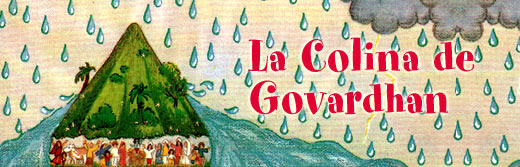
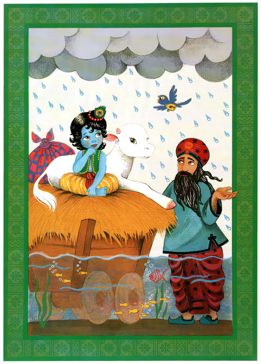

Completamente mojados, los aldeanos buscaban algun lugar donde poder refujiarse de la tormenta. Pero no habia nada que pudieran hacer. Estaban muy lejos de sus propias casas. No habia forma de escaparse de la lluvia y de los truenos. Nanda Maharaja se arrodillo y orando dijo: “Oh mi Señor Supremo, tu eres muy bondadoso con tus devotos, y eres el mas poderoso. Por favor salvanos de la ira de Indra. Por favor no nos olvides, nosotros tus pastores de vacas.” Todos se arrodillaron orando, esperando que Dios les salvara.